⚡ The Best Wireless Gaming Mice (2026 Edition)
In-depth performance breakdown, true sensor specs, weight distribution, and value analysis.
The wireless gaming mouse market in 2026 is defined by extreme weight reduction, sub-millisecond wireless latency, and native 8K polling rates. While sub-50-gram chassis designs have become the standard for competitive FPS setups, choosing the right mouse comes down to sensor efficiency, switch durability, and shape geometry rather than raw DPI numbers.
Razer Viper V4 Pro
#1 Performance Pick


Technical Overview
The Viper V4 Pro represents Razer's flagship effort toward zero-compromise ultra-lightweight design. Weighing just 49 grams without structural cutouts, it incorporates the Focus Pro 50K Gen-3 optical sensor with Frame Sync technology to align sensor polling directly with graphics processing cycles.
Equipped with Gen-4 Optical Switches rated for 100 million clicks, double-clicking is non-existent. At a standard 1000Hz polling rate, battery life extends up to 180 hours; dropping to 45 hours under full 8000Hz continuous transmission.
User Reviews & Feedback
"The 49g weight is insane. Coming from a G502, this feels like holding air. My aim in Valorant improved significantly within the first week."
Competitive FPS Player, Verified Purchase"8K polling is a game-changer if you have a 240Hz+ monitor. The battery drops fast at 8K, but at 1000Hz it lasts forever."
Tech Reviewer, Amazon Verified"The shape is safe but not for everyone. If you have large hands and use palm grip, consider the DeathAdder instead."
Esports Coach, Verified BuyerKey Strengths
- Industry-leading 49g solid-shell weight
- True 8000Hz wireless polling out of the box
- Focus Pro 50K Sensor with 930 IPS tracking
- 180-hour battery ceiling at 1000Hz
Technical Specifications
- Weight: 49g
- Sensor: Focus Pro 50K Optical Gen-3
- Switches: Razer Gen-4 Optical (100M clicks)
- Connectivity: 2.4GHz HyperSpeed, USB-C
- Shape: Symmetrical / Ambidextrous
✅ Pros
- Lightest mouse on the market at 49g
- Native 8K Hz wireless polling
- Exceptional 180-hour battery life at 1000Hz
- Focus Pro 50K sensor with Frame Sync
- Gen-4 optical switches with 100M clicks
- Optical scroll wheel for precise control
- Includes grip tape and USB-C cable
❌ Cons
- Premium price at $159.99
- No Bluetooth connectivity
- Battery drops to 45 hours at 8K polling
- Shape not ideal for palm grip users
- Synapse software can be bloated
ASUS ROG Keris II Ace
19% Off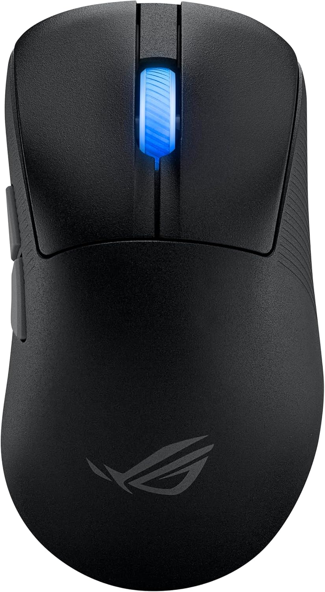
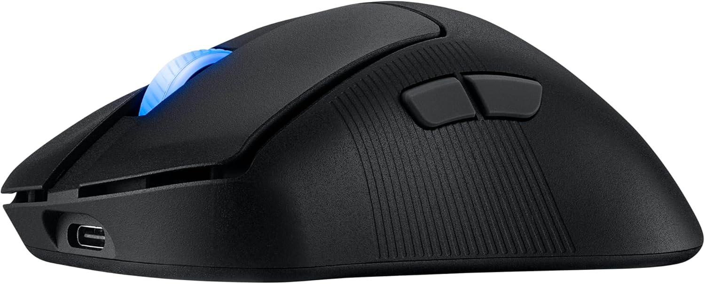
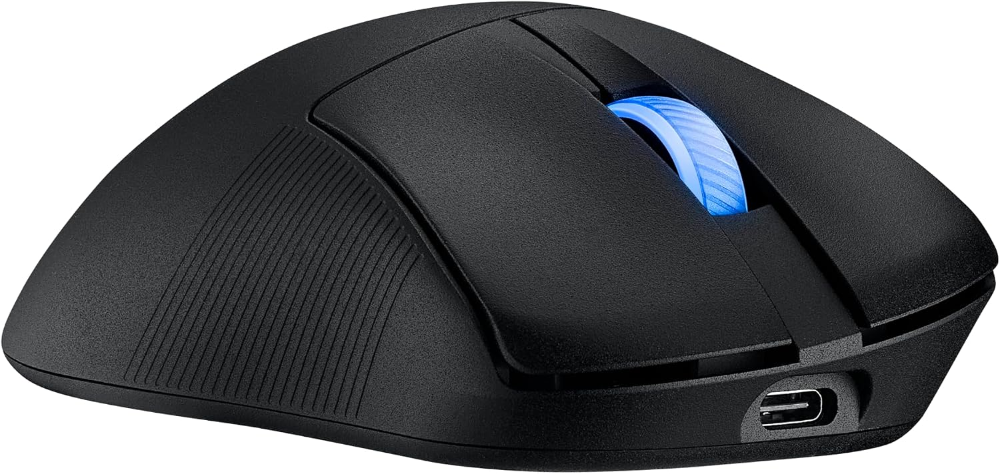
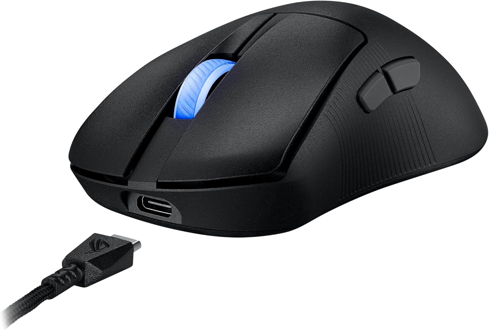
Technical Overview
Designed in collaboration with FPS esports players, the ROG Keris II Ace delivers an ergonomic right-handed shape in a 54g frame. The AimPoint Pro 42K optical sensor boasts less than 1% CPI deviation and supports reliable tracking on glass surfaces.
Flexibility is a major highlight, featuring Tri-Mode connectivity (2.4GHz RF with SpeedNova, Bluetooth 5.1, and wired USB-C). It also integrates with the ROG Omni Receiver for multi-device pairing on a single dongle.
User Reviews & Feedback
"This is the most comfortable mouse I've ever used. My wrist pain disappeared after switching from a flat ambidextrous mouse."
Long Session Gamer, Verified Purchase"54g with ergonomic shape is a winning combo. The tri-mode connectivity is perfect for switching between my gaming PC and work laptop."
Hybrid Worker/Gamer, Amazon Verified"Great mouse but 1K polling in 2026 feels outdated. If you're a competitive FPS player, look at the Viper V4 Pro or Superlight 2."
Competitive Player, Verified BuyerKey Strengths
- Ergonomic right-hand contour tailored for claw/palm grip
- AimPoint Pro sensor tracks seamlessly on glass
- Tri-mode connectivity including Bluetooth 5.1
- 100M click rated ROG Optical Switches
Technical Specifications
- Weight: 54g
- Sensor: ROG AimPoint Pro (42,000 DPI)
- Switches: ROG Optical Micro Switches
- Connectivity: 2.4GHz SpeedNova, Bluetooth, USB-C
- Shape: Ergonomic (Right-Handed)
✅ Pros
- Most comfortable ergonomic shape
- 54g ultralight with perfect balance
- Tri-mode connectivity (2.4GHz + BT + USB)
- 42K sensor with <1% CPI deviation
- 107 hour battery life
- 100M click optical switches
- 100% PTFE feet for smooth gliding
- Onboard settings control
- ROG Omni Receiver support
❌ Cons
- Only 1K Hz polling (no 8K option)
- Right-handed only
- Bluetooth mode has higher latency
- Armoury Crate software is clunky
- No charging dock included
Logitech G PRO X Superlight 2
Pro Standard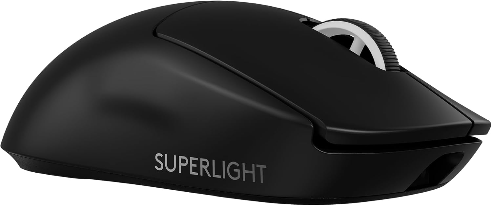
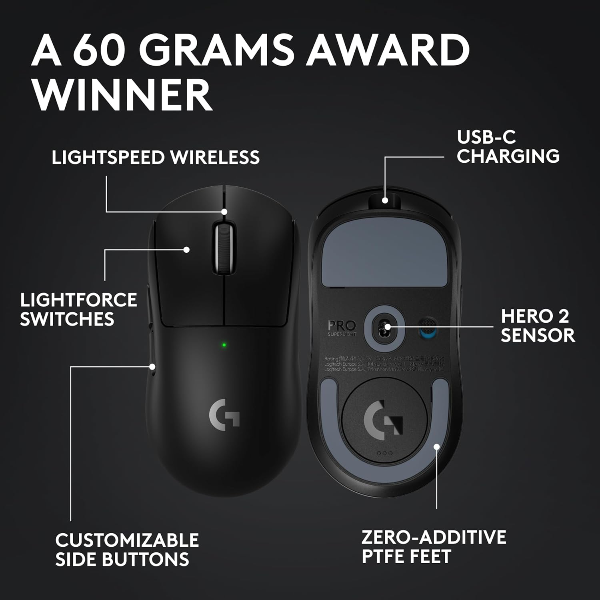
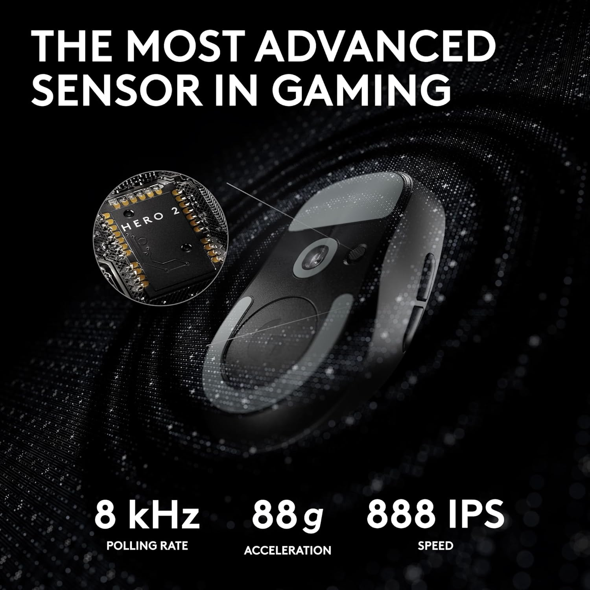
Technical Overview
The Superlight 2 updates Logitech's flagship esports design with the HERO 2 sensor, supporting up to 44,000 DPI and over 888 IPS tracking without smoothing or filtering. It introduces LIGHTFORCE hybrid optical-mechanical switches, offering tactile click response with optical speed.
Updated with USB-C charging, 8K polling support via firmware updates, and direct compatibility with Logitech POWERPLAY wireless charging mousepads, it remains one of the safest shape choices for competitive gaming.
User Reviews & Feedback
"This is THE pro mouse. Every CS2 pro I follow uses this or the older Superlight. The shape is safe and the battery lasts forever."
CS2 Player, Verified Purchase"Coming from the original Superlight, the 8K polling is noticeable. The USB-C charging is a welcome upgrade. G Hub still sucks though."
Esports Enthusiast, Amazon Verified"The most reliable mouse I've ever owned. No double-click issues, no connection drops. It just works."
Long-term Logitech User, Verified BuyerKey Strengths
- Safe, proven shape suitable for almost all grip styles
- HERO 2 sensor with extreme 888+ IPS speed rating
- Compatible with POWERPLAY dynamic charging mats
- Hybrid switches combine tactile feel with optical reliability
Technical Specifications
- Weight: 60g
- Sensor: HERO 2 (44,000 DPI)
- Switches: LIGHTFORCE Hybrid Optical-Mechanical
- Connectivity: LIGHTSPEED 2.4GHz Wireless, USB-C
- Shape: Ambidextrous (Side buttons on left)
✅ Pros
- Championship-proven shape
- 8K Hz wireless polling with HERO 2
- 44K DPI with zero smoothing
- 95 hour battery life
- POWERPLAY wireless charging
- LIGHTFORCE hybrid switches
- Zero-additive PTFE feet
- USB-C charging
❌ Cons
- Heavier than Viper V4 Pro (60g vs 49g)
- No Bluetooth connectivity
- Premium price at $149.99
- G Hub software can be annoying
- No USB-C to C cable included
8BitDo Retro R8
Best Value / Budget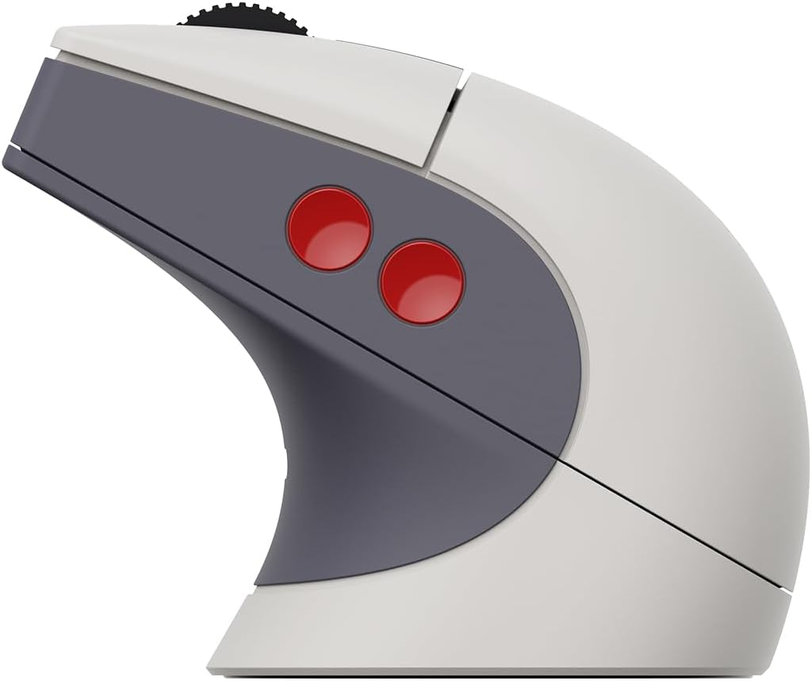
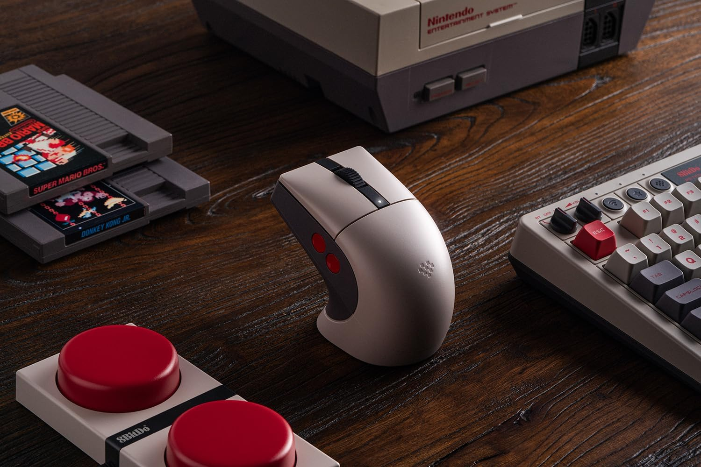
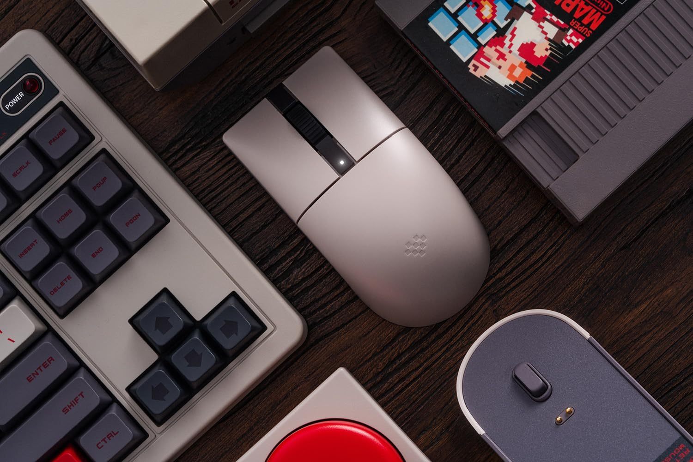
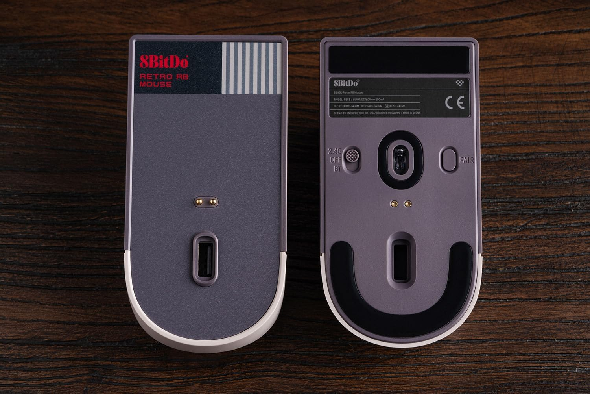
Technical Overview
The 8BitDo Retro R8 combines a classic aesthetic with modern performance hardware. Powered by the proven PixArt PAW 3395 sensor (26K DPI), it includes a dedicated charging dock that doubles as a signal extender to reduce interference.
Featuring Kailh Sword GM X micro switches (rated for 100M clicks) and 4K polling support via Ultimate Software V2, it offers premium features typically restricted to $100+ mice at under $45.
User Reviews & Feedback
"For $44, this is insane value. PAW 3395 sensor, 4K polling, and a charging dock? My $100 Razer didn't come with a dock."
Budget Conscious Gamer, Verified Purchase"The retro look is unique and the dock is surprisingly useful as a signal extender. My desk setup has never looked better."
Retro Gaming Enthusiast, Amazon Verified"Build quality is decent but not premium. For the price, you can't complain. Great for casual gaming and office work."
Daily Driver User, Verified BuyerKey Strengths
- Unbeatable value with an included charging dock
- High-grade PixArt PAW 3395 optical sensor
- 4K wireless polling capability
- Hardware mode switching for left or right-handed use
Technical Specifications
- Weight: ~84g
- Sensor: PixArt PAW 3395 (26,000 DPI)
- Switches: Kailh Sword GM X (100M Clicks)
- Connectivity: 2.4GHz, Bluetooth, USB-C
- Battery Life: ~100 Hours
✅ Pros
- $44 price incredible value
- PAW 3395 sensor (top-tier)
- 4K Hz polling rate
- Charging dock with signal extension
- Kailh Sword GM X switches (100M clicks)
- Programmable buttons
- Tri-mode connectivity (2.4G, BT, USB)
- Left/right-hand mode switching
❌ Cons
- Retro design isn't for everyone
- Software only works on Windows
- Weight is higher (~84g)
- Build quality feels plasticky
- Battery life could be better
- No RGB lighting
Razer DeathAdder V3 HyperSpeed
Best Ergonomic Value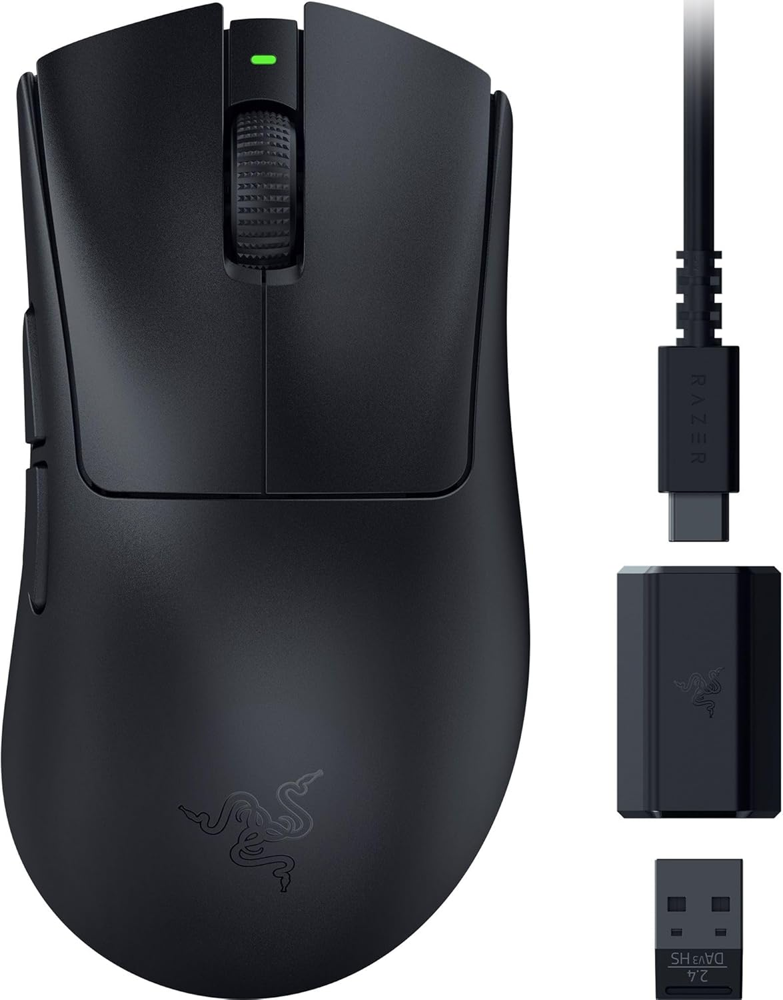
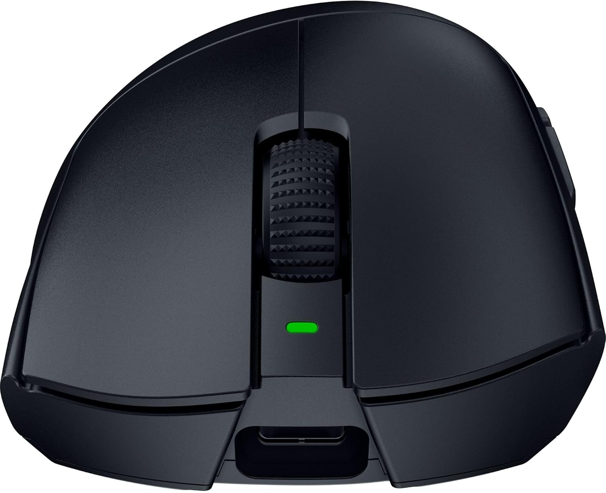
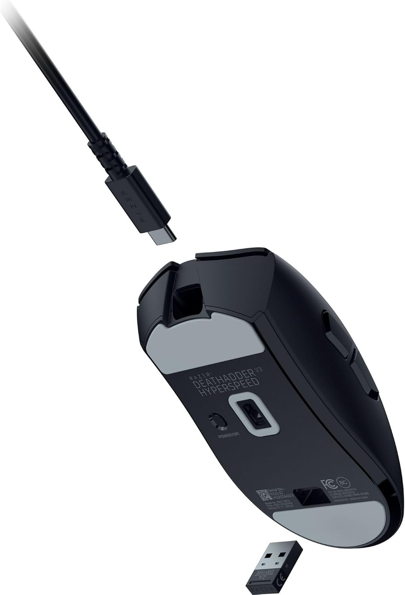
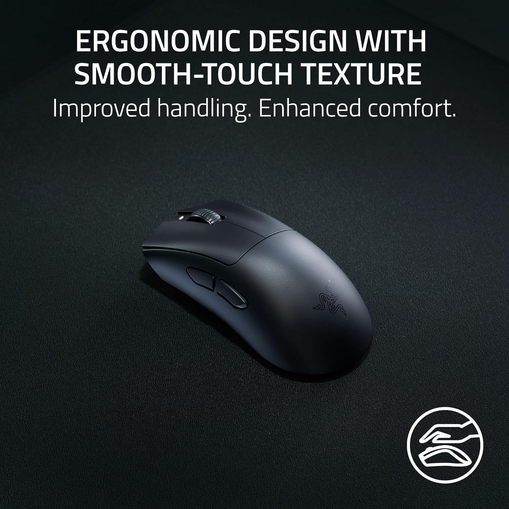
Technical Overview
The DeathAdder V3 HyperSpeed brings Razer's iconic ergonomic shape into a lighter, slightly scaled-down profile weighing 55g. Designed specifically for palm and claw grips, it features a smooth-touch coating that provides grip without requiring rubber side panels.
Driven by the Focus X 26K sensor (99.6% resolution accuracy) and Gen-3 Optical Switches (90M click lifespan), it offers up to 100 hours of continuous gameplay and can be upgraded to 8K polling using Razer's HyperPolling dongle.
User Reviews & Feedback
"I've used DeathAdders for 10+ years. This is the best one yet. 55g, ergonomic, and the smooth-touch finish is perfect for sweaty palms."
Long-time Razer User, Verified Purchase"At $80, this is the best value pro mouse. The shape is perfect for palm grip. 100-hour battery means I charge it once a week."
FPS Gamer, Amazon Verified"Coming from a G Pro Wireless, the DeathAdder feels more comfortable. The only downside is 1K polling, but I'll upgrade to the 8K dongle later."
Competitive Player, Verified BuyerKey Strengths
- Ergonomic contour optimized for competitive FPS play
- Lightweight 55g frame without structural cutouts
- Up to 100-hour battery life with USB-C fast charging
- Upgradeable to 8000Hz polling rate
Technical Specifications
- Weight: 55g
- Sensor: Razer Focus X 26K Optical
- Switches: Razer Gen-3 Optical (90M Clicks)
- Connectivity: 2.4GHz HyperSpeed Wireless, USB-C
- Shape: Ergonomic (Right-Handed)
✅ Pros
- $80 price best value on this list
- 55g ultralight with pro-tested shape
- 100 hour battery life
- Gen-3 optical switches (90M clicks, 0.2ms)
- Smooth-touch texture for better grip
- Upgradeable to 8K polling
- Ergonomic shape optimized with pros
- HyperSpeed Wireless stable in tournaments
❌ Cons
- Standard 1K Hz polling (8K upgrade costs extra)
- No Bluetooth connectivity
- Right-handed only
- Synapse software can be buggy
- No charging dock included
📊 Hardware Spec Matrix
Side-by-side technical specification breakdown.
| Model | Weight | Sensor | Max DPI | Max Polling | Battery Life | Shape | Price |
|---|---|---|---|---|---|---|---|
| Razer Viper V4 Pro | 49g | Focus Pro 50K | 50,000 | 8K Hz Native | 180Hr (1K) | Symmetrical | $159.99 |
| ASUS ROG Keris II Ace | 54g | AimPoint Pro | 42,000 | 1K Hz (4K ready) | 107Hr | Ergonomic | $129.99 |
| Logitech Superlight 2 | 60g | HERO 2 | 44,000 | 8K Hz (FW update) | 95Hr | Symmetrical | $149.99 |
| 8BitDo Retro R8 | 84g | PAW 3395 | 26,000 | 4K Hz | ~100Hr | Symmetrical | $44.26 |
| Razer DeathAdder V3 HS | 55g | Focus X 26K | 26,000 | 1K Hz (8K ready) | 100Hr | Ergonomic | $79.99 |